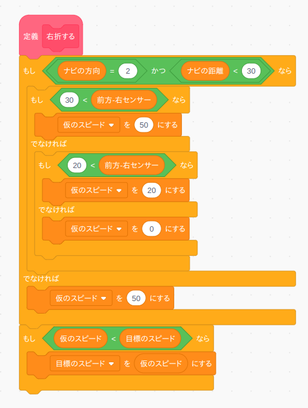

5. 次の行動を決める
1
次の行動を決める
Q値を記録する配列を作成しましたので、今度はQ値を元に車の次の行動を決めてみましょう。
まず「行動」という変数と「Q値の最大値」という変数を作成します。

次に「次の行動を決める」ブロックをブロック定義から作ります。なおこのブロックは繰り返し実行されますので「画面を再描画せずに実行する」は必ずチェックして下さい。
このブロックは上→左→下→左の行動順にQ値を求めて、Q値が最大になる行動を「行動」変数に入れるという動作をしています。
2
動作確認
ではこのブロックの動作確認をしましょう。まず動作確認用のテストプログラムを作成します。

車の現在地点の上方向(行動=1)のQ値を10にセットしてから「次の行動を決める」ブロックを実行しますので、変数「行動」と「Q値の最大値」の値が次の様になっていれば正常に動作しています。
うまく動きましたら「Q値をセットする」の行動とQ値の数値を色々変えるとどの様に変数「行動」と「Q値の最大値」の値が変化するのか試して下さい。
チャレンジ
今回は上→左→下→左の順に行動のQ値を比較していましたので、もし同じQ値の行動が2つ以上ある場合は必ず上→左→下→左の優先順で選択してしまいます。本格的なQ学習では同じ値の行動が2つ以上ある場合はランダムに行動を選択しますので、その様にプログラムを改造してみましょう。